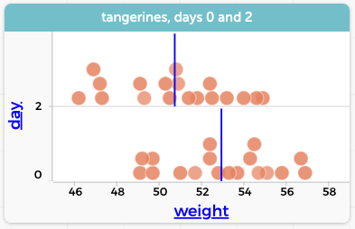

29 Tangerines Revisited
We saw data on tangerines in the chapter on bootstrapping, but we didn’t see all of the data. The more complete dataset has 72 cases and three attributes:
- id
- The initials of the student who “owned” the tangerine
- weight
- The weight of the tangerine in grams
- day
- Which day of the lesson this measurement was taken
That’s right, we have repeated measurements over the course of a week. What do you suppose happens to the weight of a tangerine as time passes?1
Now, what to do? First, we will concentrate only on day 0 and day 2, so that’s 36 cases in two groups. If you plot the two distributions of weight, you see this:

day categorical in the graph.This presents one clear task:
Do a randomization test (i.e., scrambling) to see if it is plausible that the difference in mean weights could be due to chance alone. Find a \(P\)-value and draw a conclusion.
But then, there is a different task we can do to approach this problem from another direction
Estimate (i.e., use a bootstrap) the mean difference in weight of the 18 tangerines between day 0 and day 2.
That is,

- Calculate, for each individual tangerine, how much weight it gained or lost. (You will have to do a grouping move. But what should you group by?)
- Plot those gains or losses to make sure they make sense. Author’s results at right.
- Find the mean of those values.
- Do a bootstrap to find a plausible range for that mean.
- Does the range overlap with zero? (no!)
- Explain what that must mean.
Then compare your two results.
You can
or you can do your work in the live demo below.
You should have discovered that the “paired” version, where you looked at the 18 differences from individual tangerines rather than the overall difference in the distribution of 18 tangerines, was much more obviously not due to chance.
See if you can make sense of this. Of these two statements:
- It is obvious that the distribution of differences does not overlap zero.
- It is obvious that the means of the two distributions are different.
Why is (a) so much more obvious?
Researchers often use this idea of a “paired” test when they can, especially in a situation like this (which is called “repeated measures.”)
Suppose you have a drug that’s supposed to reduce cholesterol. If you have two ways of analyzing the data:
- Find the reduction (or gain) of each individual in the study before and after they take the drug, and find the average of the changes.
- Find the mean cholesterol for the group before and after they take the drug, and find the change of the averages.
You will usually find a stronger result with the first (paired) scheme. Again, see if you can figure out, conceptually, why.
Now, as to where the data science is: think about the different ways you had to arrange the dataset in order to get what you were looking for. Some of this was about knowing CODAP and how to “drive” the program. But part is also your conceptual understanding of how a dataset works and the power of grouping.
This is a science question, really, which means that the best answer is often, “it depends.” To which we ask, “depends on what?”, which makes it a data question again.↩︎